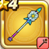

ユグドラシル
攻略班 5.5点 / キアリクバギマいやしのかぜ
くわしい特徴
【レベル別習得スキル】 Lv1キアリク（消費MP：10）仲間全員の麻痺をなおす Lv8バギマ（消費MP：15）はげしい竜巻で敵全体にバギ属性の呪文小ダメージを与える Lv20いやしのかぜ（消費MP：26）味方全体のHPを回復する Lv28エレメント系へのダメージ+10% Lv36さいだいMP+8 Lv40かいふく魔力+8 【限界突破スキル】 1凸じゅもんダメージ+5% 2凸じゅもんダメージ+5% 3凸じゅもんダメージ+5% 4凸じゅもんダメージ+5%